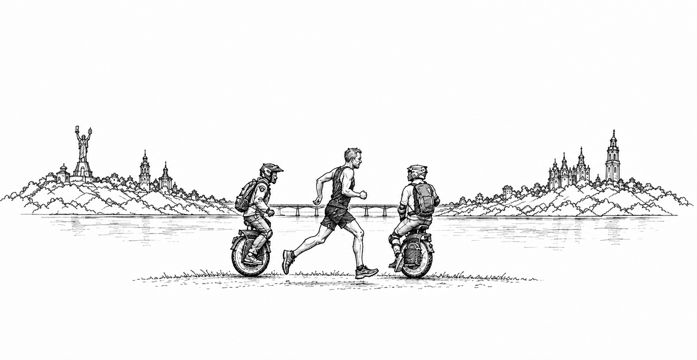

abd
y
mok

ukraine
@
war
Dispatches from Kyiv, and the record behind them.
Infrastructure
Damage to critical infrastructure · Updated Nov. 9, 2026
→
Data center
Damage to data centers
→
Method
How the numbers are counted
→
Mural
A gallery of ukraine@war posts
→
Bibliography
An annotated guide to the Ukraine@war archive.
→